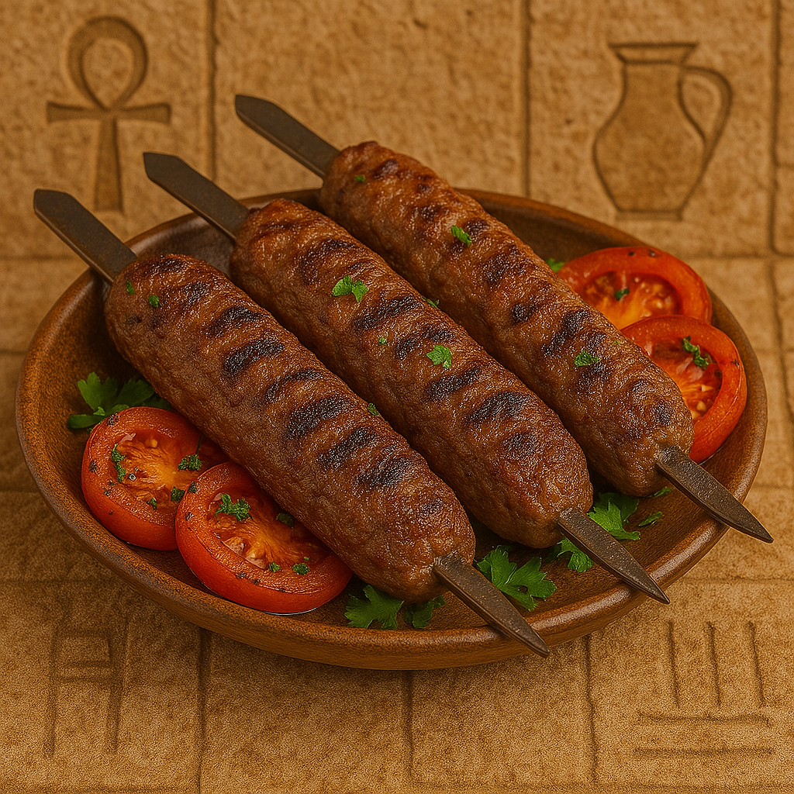

Juicy Egyptian Minced Meat Skewers
Kofta is a classic Egyptian dish made of minced meat mixed with herbs and spices, shaped into logs and grilled to perfection. Often served with rice or baladi bread.
Ingredients:
- 500g minced beef or lamb (or a mix)
- 1 onion (grated)
- 2 tbsp parsley (finely chopped)
- 1 tsp cumin
- Salt and black pepper
- Skewers or wooden sticks
Instructions:
- In a bowl, mix minced meat with grated onion, parsley, and spices.
- Shape into long logs and insert skewers if using.
- Grill over charcoal or bake in a hot oven until fully cooked and browned.
- Serve with rice, tahini, or salad.